面向多阶段语言模型程序（LM Programs）的指令与示例（Demonstrations）优化
多阶段 LM 程序（由多个模块化 LM 调用组成的流水线）的提示需要联合设计，但人工试错成本高，且现有提示优化器（APE、OPRO 等）大多只支持单阶段、缺乏模块级标签或梯度。论文将该问题形式化为：在只有程序本身、任务级指标和训练集的弱假设下，联合优化各模块的自由格式指令与少样本示例，并提出指令提议（Grounding：以数据集摘要、程序控制流摘要、历史评分为上下文）与信用分配（greedy、Bayesian surrogate、history-based）两类策略，构建出 MIPRO 等一系列优化器，用 Optuna TPE 代理模型加 mini-batch 评估高效搜索，并发布覆盖 7 个任务的 benchmark。实验以 Llama3-8B 为任务模型、GPT-3.5 为 proposer，MIPRO 在 7 个任务中的 5 个上超过基线，最高提升 13% 准确率。关键结论：优化 bootstrapped 少样本示例通常收益最大；指令优化对含条件规则的任务最关键；两者联合优化（MIPRO）整体最优；Grounding 有效但最优提议策略因任务而异。优化器与 benchmark 已开源在 DSPy，可直接用于团队多阶段流水线的提示自动调优。
多阶段 LM 程序中各模块的提示需要联合有效，但任务级指标下所有提示变量都是隐变量，且无法访问模块级标签、梯度或 log-probabilities；现有提示优化器（APE、OPRO、EvoPrompt 等）主要面向单阶段提示，DSPy 前作的优化器也不能为多提示流水线调优指令。论文要解决：如何在这些弱假设下高效优化任意 LM 程序的提示，并应对两大挑战——提示空间爆炸导致的 proposal challenge，以及跨多模块联合变量搜索的 credit assignment challenge。
将 LM 程序提示优化形式化为对每个模块的指令变量与 K 个 demonstration 变量的离散搜索，提出通用优化框架（Initialize/Propose/Update/ExtractOptimizedSets）。针对提议问题：用 proposer LM 生成指令，并以 Grounding 提供数据集摘要、程序控制流摘要、bootstrapped 示例与历史指令评分作为上下文，另用拒绝采样从训练集轨迹中 bootstrapped 少样本示例；针对信用分配：比较 greedy、基于 Optuna TPE 的 Bayesian surrogate（配合 mini-batch 随机评估以节省调用预算）、history-based（OPRO 式把评分历史放入上下文）三种方案。组合出 Bootstrap Random Search、Module-Level OPRO、MIPRO（bootstrapped 示例 + grounded 指令候选 + Bayesian 优化选择）、0-Shot MIPRO(++)、Bayesian Bootstrap、MIPRO++（元优化提议超参如温度、是否用数据/程序摘要、tip）等优化器，并发布 7 任务 benchmark（HotPotQA、HotPotQA Conditional、Iris/Iris-Typo、Heart Disease、ScoNe、HoVer），全部实现在 DSPy 中。
MIPRO 在 7 个任务中的 5 个上优于基线优化器（任务模型为 Llama3-8B），准确率最高提升 13%
Wilcoxon 符号秩检验显示，除 HotPotQA Conditional 外，简单的 Bootstrap Random Search 在所有任务上都优于最佳 instruction-only 优化器
联合优化指令与示例的 MIPRO 在 7 个任务中的 5 个上取得最佳整体表现（例外：HotPotQA、Heart Disease、无 typo 的 Iris）
在 HotPotQA Conditional 上，仅 0-shot 指令优化即优于仅优化示例；在 Iris-Typo 场景中指令优化器甚至能修正 seed prompt 中的拼写错误
Grounding 消融：对 HotPotQA 与 HoVer 的提升至关重要，但在 ScoNe 上反而有害；0-Shot MIPRO++ 能学到恢复 ScoNe 性能的提议策略，且学到的超参重要性显示 meta-prompt 中 bootstrapped 示例的选择与 tip 最重要
优化预算：HotPotQA/ScoNe 为 50 次全量评估（约 300 次 mini-batch 试验），Iris/Heart Disease/HotPotQA Conditional 为 30 次，HoVer 为 20 次；每方法每任务运行 5 次
与 APE/OPRO/EvoPrompt 等单阶段提示优化器不同，本文系统形式化并求解多阶段 LM 程序的提示优化：不依赖模块级标签、梯度或 log-probabilities（区别于依赖 token log 概率的 Sordoni et al. 变分推断方法），可开箱即用地优化任意数量模块；将问题分解为指令提议与跨模块信用分配两个子问题，引入 Bayesian surrogate（TPE）+ mini-batch 评估做高效信用分配，并用 Grounding 与元优化（MIPRO++）提升提议质量；同时发布首个面向 LM 程序优化器的 7 任务 benchmark。相对 DSPy 前作，此前的优化器只能 bootstrapped 示例、无法调优多提示流水线的指令。
相关度级别：high
命中能力域：3.2 提示工程 | 3.3 Agent 架构与工具使用 | 3.5 评测与可靠使用
理由：论文正面命中团队'提示的设计与优化'核心关切（3.2 自动提示优化）：它把团队日常手写的多阶段流水线提示（多跳检索 QA、分类、逻辑判断等）变成可用任务级指标自动联合优化的对象，且工具已开源在 DSPy。其 7 任务 benchmark、优化预算控制（mini-batch 评估）与面向实践者的五条教训属于 3.5 的评测方法、成本效率与 AI 辅助工程实证；对多模块程序做信用分配与联合调优的思路，也直接适用于团队构建的 Agent/流水线 harness 的执行可靠性工程（3.3）。论文结论可直接指导团队在 DSPy 或自研框架中的提示调优策略与预算分配。
建议动作：深入精读并做内部分享
arXiv:2406.11695v2 [cs.CL] 2024年10月6日
面向多阶段语言模型程序的指令与示例优化
Krista Opsahl-Ong 1*，Michael J Ryan 1*，Josh Purtell 2，David Broman 3，Christopher Potts 1，Matei Zaharia 4，Omar Khattab 1
1 斯坦福大学，2 Basis，3 KTH皇家理工学院，4 加州大学伯克利分校（UC Berkeley）
语言模型程序（Language Model Programs），即由模块化语言模型（LM）调用构成的复杂流水线，正日益推动自然语言处理（NLP）任务的发展。然而，构建这类流水线需要精心设计提示，使其对所有模块联合有效。我们研究针对 LM 程序的提示优化，即如何在无法获取模块级标签或梯度的情况下更新这些提示，以最大化下游指标。为使该问题易于处理，我们将问题分解为对每个模块的自由格式指令与少样本示例的优化，并提出了若干策略，用于构建基于任务的指令以及处理跨模块的信用分配。我们的策略包括：(i) 用于提出有效指令的程序与数据感知技术；(ii) 用于学习目标代理模型的随机小批量评估函数；以及 (iii) 一种元优化过程，通过该过程我们随时间不断改进 LM 构建提案的方式。基于这些见解，我们开发了 MIPRO 这一新型优化器，在使用同类最佳的开源模型（Llama3-8B）的情况下，它在七个多样化 LM 程序中的五个上超越了基线方法，准确率提升最高达 13%。我们已在 DSPy 中发布了新的优化器与基准测试（benchmark），网址为 http://dspy.ai 。
使用语言模型（LM）解决复杂任务，通常需要应用复杂的提示技术（Wei et al., 2022; Chen et al., 2022），并将它们串联为多阶段流水线（Wu et al., 2022; Dohan et al., 2022; Khattab et al., 2022; Beurer-Kellner et al., 2023; Yao et al., 2023; Schlag et al., 2023）。此类语言模型（LM）程序通过系统化组合（Khattab et al., 2021; Creswell and Shanahan, 2022; Pan et al., 2024）与工具调用（Qin et al., 2023）不断推动 NLP 任务的发展（Pourreza and Rafiei, 2023; Khattab et al., 2024; Ridnik et al., 2024）。然而，如今的 LM 程序通常是通过“提示工程”来设计的：即通过人工反复试错来精心制作提示，以迫使某个特定的 LM 执行特定流水线中的每一步。诸如 APE（Zhou et al., 2023）、OPRO（Yang et al., 2024）和 EvoPrompt（Guo et al., 2024）等近期工作提出了提示优化器（prompt optimizers），即在字符串空间中进行搜索以找出高性能提示的算法。遗憾的是，这类工作大多无法直接应用于多阶段 LM 程序，因为在这类程序中，我们缺乏针对各个 LM 调用的金标准标签或评估指标。Khattab et al. (2024) 研究了如何表达任意 LM 流水线，使得每次 LM 调用的指令、演示（输入/输出示例）以及 LM 权重都被视为可针对任意指标进行优化的参数。尽管作者提出了能够为多阶段流水线创建演示，并利用这些演示来优化提示、权重、甚至同时优化两者的优化器
* 同等贡献。
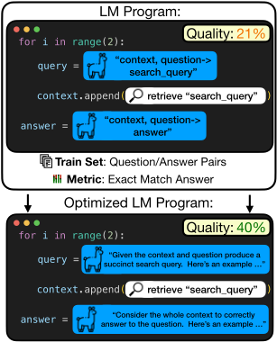
（Soylu et al., 2024），但他们所提出的优化器无法为多提示流水线调整指令。
我们寻求在任意 LM 程序中高效地优化提示，尤其是那些包含多个阶段的程序（图 1），并探索在弱假设下依然成立的方法，这与 DSPy 编程模型（Khattab et al., 2024）中的抽象相一致。特别地，我们假设既无法访问 LM 权重和对数概率，也无法获得针对 LM 调用链中各中间阶段的人工编写的指标或标签。我们只需要 LM 程序本身、一个待优化的指标，以及一个由输入组成的训练集（视指标而定，还可能需要最终输出）。
我们形式化地定义了 LM 程序的提示优化问题，并通过识别两个关键挑战来勾勒其设计空间。首先是提案挑战（proposal challenge）：可能的提示空间庞大到难以处理，且随着模块数量的增加，这一问题会进一步加剧。因此，提出少量高质量指令至关重要。其次是信用分配挑战（credit assignment challenge）：我们的问题需要对参数化所有模块提示的众多不同变量进行联合优化。为了合理分配搜索精力，我们必须有效地推断对每个变量所做的配置会产生何种影响。
我们定义了若干策略来逐一应对这些挑战，并系统地探索了它们所带来的权衡取舍。我们发现，优化自举（bootstrapped）少样本示例往往是实现最大性能提升的关键，但对于包含条件规则的任务，优化指令则变得更为重要。我们还发现，将指令与少样本示例同时优化通常能带来最佳结果。
我们的贡献有三点。首先，我们给出了语言模型程序（LM program）优化问题的形式化定义（§2），并提出一个算法设计空间，其中包含用于应对提示提案（prompt proposal）挑战的三种策略，以及用于解决信用分配（credit assignment）问题的三种策略（§3）。其次，我们发布了一个涵盖七项任务的 LM 程序优化器基准测试套件（§5）。第三，我们构建并评估了提示优化可用算法中一个内容丰富的子集（§4）。其中最为突出的是 MIPRO（Multiprompt Instruction PRoposal Optimizer），它在我们的基准测试中于七项任务中的五项上超越了基线优化器，准确率提升最高达 13%。借助我们的算法，我们为希望优化 LM 程序的从业者总结出了五条关键经验（§6）。
考虑一个由 m 个模块组成的 LM 程序 Φ，其中每个模块都使用某个 LM。每个模块 i 由一个提示模板 p i 定义，该模板包含一组变量（开放槽位）v。例如，用于少样本问答（few-shot QA）的提示模板可能包含用于指令、演示和目标问题的变量。
设 V 为 Φ 的提示模板所使用的全部变量构成的集合，并设 V ↦→ S 为变量 V 到字符串 S 的一个完全赋值（total assignment）。我们用 Φ V ↦→ S 表示在此类赋值下运行的程序 Φ。我们的高层目标是找到一个完全赋值，使 Φ 在训练集 D 上相对于度量 µ 的性能最优，其中 D 包含输入 X 以及可选的元数据 X ′（例如标签）：
这正是设计 LM 程序的人们所面临的问题。该问题是难解的，因为 (i) 每个字符串 s ∈ S 可以取任意值；(ii) 度量 µ 仅在整个任务层面提供监督信号，因此 V 中的每个变量都是隐变量；(iii) 我们假设无法访问所涉及 LM 的梯度或嵌入，这就排除了许多强化学习（RL）和提示调优算法（Zhang et al., 2022; Li and Liang, 2021; Shin et al., 2020）。此外，(iv) 系统设计者通常只有较小的数据集 D，并且 (v) 用于评估 Φ 的 LM 调用预算也很有限。
在许多情况下，我们只想优化 Φ 所使用变量的一个子集。例如，在本工作中，我们假设每个提示 p 具有一个关于自由格式指令的变量 i，以及一组关于演示的 K 个变量 { d i 1 , . . . , d ik }。在这些设置下，我们假设 Φ 的所有其他变量都被设为常量值。
为了求得式 (2) 的近似解，我们在算法 1 所定义的通用优化框架内开展工作。该框架将 OPRO（Yang et al., 2023）和 APE（Zhou et al., 2022）等先前方法推广到 LM 程序的优化。该方法的主要参数是优化器 M 和未经优化的程序 Φ。我们假设每个优化器都具有 Initialize、Propose、Update 和 ExtractOptimizedSets 方法，并且拥有某种内部状态，该状态为提案提供依据，并在调用 update 时进行更新。
算法 1 定义了 LM 程序的一个通用优化框架。我们寻求该算法的高效实例化，使程序 Φ 被调用的次数（第 10 行）以及由此必须采样提案的次数（第 8 行）降至最低。为此，我们特别关注构建这样的 LM 程序优化器：其策略能够应对第 1 节中讨论的提案与信用分配挑战。在本节中，我们为此提出了若干新颖或改进的策略。随后，第 4 节定义了这些策略的几种有效组合，使我们能够在实践中实证研究它们的特性。我们在图 4 中展示了这些组件如何组合在一起构成 LM 程序优化器。
为了使这一近似优化问题变得易于处理，我们必须能够高效地采样出与我们的任务、程序、数据和指标的性质高度契合的候选提示（prompt）。为此，我们利用另一个 LM 作为“提案者”（proposer）LM，并考虑：(i) 自举（bootstrapping）能够演示如何执行任务的少样本（few-shot）示例；(ii) 收集并总结可为高质量指令的构建提供参考的重要因素；和/或 (iii) 对提案者 LM 的使用方式进行元优化（meta-optimizing），以创建高性能的指令。
自举演示（Bootstrapping Demonstrations） Khattab 等人（2022, 2024）研究了一种简单却出奇有效的拒绝采样（rejection-sampling）策略，用于优化 LM 程序的提示。输入 x 从训练集中采样，并通过 Φ( x ) 运行，为程序中的每个模块生成输入/输出轨迹 τ。如果以指标 µ 衡量的输出得分是成功的，即对于某个阈值 λ 和 ( x, x ′ ) ∈ D，满足 µ (Φ( x ) , x ′ ) ≥ λ，他们便将轨迹中的所有值视为 Φ 中相应模块的潜在带标注演示（即有效的输入/输出示例）。给定这些潜在演示，优化问题便简化为选择（模块内以及跨模块的）演示组合，使其充当用于提示的有效少样本示例。Khattab 等人（2024）发现，对于多阶段程序，这种方法往往能胜过手写的演示。
锚定（Grounding） 我们如何引导提案 LM 为给定模块构建高性能的指令？我们假设，为提案 LM 提供相关上下文——例如数据的属性、程序的情况以及成功完成任务的示例——将使其能够创建更适合该任务的指令。因此，我们构建了一个零样本（zero-shot）LM 程序，用于：(i) 刻画原始数据集 D 中的模式；(ii) 总结程序的控制流；(iii) 自举程序演示；以及 (iv) 收集先前经过评估的各阶段提示及其在训练集上的评估得分。我们考虑将上述每一部分作为上下文提供，以“锚定”（ground）提出我们指令的 LM。关于构建数据集摘要与程序摘要的细节见附录 C。
学习提案（Learning To Propose） 每种提案策略都有若干超参数，例如用于指令生成的温度（temperature），以及是否用数据摘要、程序控制流等来锚定提案者。这些超参数的最优配置在实践中可能取决于任务、程序和提案者 LM。例如，数据集摘要对逻辑推理任务可能至关重要，但对于事实型问答（factoid question answering）这类高度熟悉的任务，它可能会干扰小型提案者 LM。有鉴于此，在学习提案（learning to propose）中，我们对提案超参数进行参数化，并在若干次试验上学习一个贝叶斯模型，以找出对给定任务、程序和 LM 设置有效的提案策略。
所提出的分配方案可以以多种配置进行组合。为了搜索这一空间，我们必须确定具体选择对 LM 程序性能的贡献。针对这一信用分配（credit assignment）问题，我们提出并探索了三种解决方案：贪心（greedy）、代理模型（surrogate）和基于历史（history-based）。
贪心（Greedy）作为一种技术，我们考虑分别提出并评估针对 LM 程序单一阶段的更改。这种方法限制了将错误误归因于不正确阶段的情况，但效率不高，原因在于（i）更改必须逐个应用，且（ii）对某些阶段的更改在其他阶段先得到改进之前，可能不会改变程序级性能。我们对贪心信用分配的初步实验表明，它并不比其他方法更有效，但会带来明显更差的时间复杂度。
代理模型（Surrogate）为实现更高效的信用分配，我们提出使用贝叶斯学习，该方法以能够高效优化具有多个潜变量的函数而著称。在这一设置中，代理模型（surrogate model）从先前的评估中学习预测不同参数组合的质量，使我们能够将未来的探索集中在搜索空间中较有希望的区域。在实践中，我们使用 Optuna 所实现的 Tree Structured Parzen Optimizer（TPE）来为 LM 程序的参数组合质量构建贝叶斯模型（Akiba et al., 2019; Bergstra et al., 2011）。TPE 的这种多变量变体对参数选择之间的联合贡献进行建模，使我们能够联合优化程序的各个变量（Falkner et al., 2018）。简而言之，基于代理模型的优化使我们能够在现有参数提案构成的离散集合上高效地进行优化。然而，其缺点在于它只允许在固定的提案集合上进行优化，来自过去评估的经验无法用于改进提案本身。
基于历史（History-Based）在此我们做出如下假设：给定过去评估的历史记录，一个足够强大的 LM 能够执行信用分配，从而无需显式的代理模型。这将使我们能够同时执行信用分配并提出改进的指令，因为提案者 LM 理论上可以同时完成这两项任务。遵循 OPRO（Yang et al., 2023）中概述的策略，我们依靠提案者 LM，通过将已评估的指令及其分数纳入上下文，从这一历史中学习所分配的信用。提案者 LM 随后基于这些信息输出一条新的指令。在第 4 节中，我们将介绍几种方式，通过这些方式可以指示 LM 以或多或少显式的方式执行这一信用分配过程。
我们现在为优化器算法的具体实例提供设计动机，这些实例由第 3 节中概述的算法策略组合而成。我们描述作为实验研究重点的算法，并将其余优化器的完整描述留待附录 F。
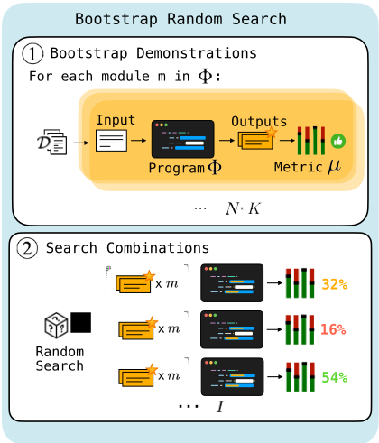
Khattab 等人（2024）通过使用随机搜索为每个模块生成并选择任务示例（demonstrations）取得了优异的结果。该方法契合我们的通用框架，并在我们的实验中作为强基线。这一优化流程（在图 2 中高亮显示）的工作方式如下：
超参数包括：K，即 Φ 中每个模块所使用的示例数量；以及 N，即需要自举（bootstrap）并评估的集合总数。在 Initialize 步骤中，使用 3.1 节所述的 Bootstrapping Demonstrations 流程自举出 N 组少样本示例。从 D 中随机采样一个输入-输出对 (x, x′) ∈ D，其中 x 是程序的输入，x′ 包含元数据（例如空答案或最终答案）。随后运行 Φ(x)，生成 Φ 处理示例 x 时所执行各步骤的完整轨迹 τ。如果输出得分较高，即在给定元数据或最终标签 x′ 的情况下，对于某个阈值 λ 满足 µ(Φ(x), x′) ≥ λ，我们便假定该轨迹是正确的，并将轨迹中每个模块的输入/输出用作候选少样本示例。重复这一过程，直到为每个模块自举出 N 组、每组 K 个少样本示例为止。在 Propose 步骤中，我们采样一组少样本示例，并用它们对 Φ 中的每个模块进行参数化。在 Update 步骤中，参数化后的 Φ 连同其在训练集（或从中专门划分出的验证集）上的评估得分被加入全局存储。在 ExtractOptimizedSets 步骤中，返回得分最高的赋值。
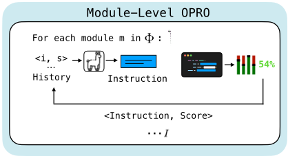
我们试图将 OPRO 算法（Yang et al., 2023）扩展到任意的 LM 程序 Φ，例如其中 m ≥ 1 个阶段嵌入在更大程序中的情形。在 OPRO 中，提议者 LM 会获得已提议指令及其得分的历史记录，从而能够随时间推移学会提出更好的指令。为了扩展 OPRO，我们首先考虑一种我们称之为 Module-Level OPRO 的方法，其中我们假设程序得分足以作为单条指令质量的代理指标。换言之，即使程序由 m 条指令进行参数化，我们也假设该得分足以反映每条指令。模块级 OPRO（图 3）的工作方式如下：
在 Initialize 步骤中，使用一条种子指令对 Φ 中的每个模块进行参数化，然后对该程序进行评估。在 Propose 步骤中，将所得得分与第 i 个模块的指令输入提议者 LM，为模块 i 生成一条新指令。这一过程对所有 m 个模块执行。随后，将所生成的 m 条指令构成的集合用于对 Φ 进行参数化，并对参数化后的程序进行评估。在 Update 步骤中，每条指令及其得分被加入各模块的历史记录中。使用更新后的历史记录再次运行 OPRO 子例程，以生成一组新指令。我们注意到，每个阶段的优化器仅被提供模块级轨迹的历史记录和代理得分。该过程持续进行，直至达到最大迭代次数。在 ExtractOptimizedSets 步骤中，返回得分最高的 Φ 参数化。
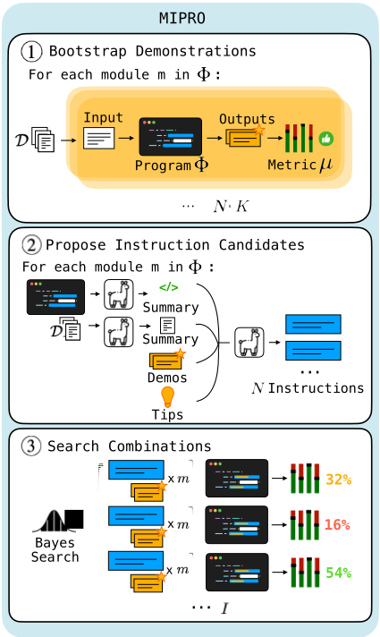
为了放宽 OPRO 的强假设，我们提出使用贝叶斯代理模型（Bayesian surrogate model），在整个优化过程中显式学习任务级得分对指令和演示示例等模块级参数的敏感性。我们将这一方法称为 MIPRO（Multi-prompt Instruction PRoposal Optimizer）。通过将信用分配任务与提示提议相分离，我们使提议语言模型（proposal LM）仅专注于提议任务本身。而信用分配和最终选择则事后使用我们的代理模型来完成。
贝叶斯优化以对噪声的鲁棒性著称，因为它能有效地将不确定性纳入优化过程 (Snoek et al., 2012)。因此，我们提出在训练数据的小批量上进行评估，而不是在每次迭代时都使用完整数据集。这使我们能够更高效地探索和利用参数配置。MIPRO 算法（图 4）如下：
在 Initialize 步骤中，MIPRO 使用 3.1 节中所述的 Bootstrap Demonstration 和 Grounding 策略，分别为每个模块自举生成一组 N 个少样本示例集和指令。表示每个模块少样本示例与指令选择的潜在类别变量以均匀先验进行初始化。在 Propose 步骤中，我们使用 Tree-structured Parzen Estimator (Bergstra et al., 2011) 的采样规则来选择用于参数化 Φ 的指令和少样本示例。在 Update 步骤中，该参数化后的 Φ 在随机选取的、包含 B 个样本的小批量上进行评分，所得得分用于更新 Estimator 关于参数质量的先验。在 ExtractOptimizedSets 步骤中，每隔 S 步，将在各次试验中平均得分最高的 Φ 候选参数化置于完整训练集上进行评估。最后，返回得分最高的、经过完整评估的参数化作为最优分配。
0-Shot MIPRO 是 MIPRO 的一个简单直接的扩展，它仅对指令进行优化，而非同时对两者进行联合优化。在存在成本或上下文窗口约束的情况下，这种做法可能是可取的。
Bayesian Bootstrap 是 MIPRO 的受限版本，将优化范围限定为仅对自举（bootstrapped）示例进行优化。当少样本示例对任务至关重要，或者当我们已经确定了一条良好的指令、并希望将预算仅用于优化示例时，这种方法可能是理想的选择。
MIPRO++ 应用贝叶斯代理模型（surrogate model）来优化提议超参数，而不是优化 LM 程序参数本身的选择。这直接源自第 3.1 节所讨论的 Learning to Propose 策略。在这种方法的完整形式中，代理模型既用于学习提出指令的优化参数，也用于学习自举示例的优化参数。然而，在本工作的背景下，我们专注于评估该方法在专门优化我们的指令提议策略方面的效果（将在下文描述）。
0-Shot MIPRO++ 通过元优化我们的 Grounded 指令提议策略如何或是否使用数据集摘要 (boolean)、使用程序摘要 (boolean)、调整提议者 LM 的温度 (float)、向提议者 LM 提供一条关于提示工程的纯文本技巧 (categorical；参见附录 C)，以及选择一组特定的自举示例展示给提议者 LM (categorical)，来对指令进行调优。随后，使用一个采用与 MIPRO 相同的小批量策略的贝叶斯模型来对这些超参数进行优化。在每次试验中，都会使用前文所述的小批量方法对带有新提出指令的程序进行评估。最后返回经过完整评估的最佳程序。
Program-Level OPRO 向提议者 LM 提供完整的多阶段轨迹历史，并依赖它将任务级得分的功劳分配给程序的各个阶段。Module-level OPRO 内嵌了两个假设：各次分配之间不存在相互依赖，且跨模块的功劳分配是均等的；而 Program-level OPRO 则假设 LM 在获得长轨迹历史时能够成功完成功劳分配。这些都是非常强的假设。特别是，随着历史长度的增长，历史中所包含的信息很可能会丢失 (Liu et al., 2023)。在我们的实验中，我们选择使用 Module-level OPRO，因为 Program-Level OPRO 更为复杂，且似乎并未带来额外的性能提升。
CA-OPRO，即“坐标上升”OPRO（CAOPRO），采用一种贪心的功劳分配方法，将 OPRO 扩展到多阶段设置。它遍历程序中的每个模块 m，使用 Module-Level OPRO 的提议函数为 m 提出一组新的 N 条指令，并在保持程序中所有其他参数固定的情况下对每个提议进行评估。随后，它用迄今为止评估得到的最佳指令来更新模块 m，并对下一个模块重复这一过程。这整个流程随后会重复 D 次。从初步实验中，我们发现 CA-OPRO 的性能并不足以证明其低效性是合理的，因此我们在实验中专注于对其他方法进行更彻底的评估。
| Benchmark | Task Type | Program | Modules | LMCalls | Metric |
|---|---|---|---|---|---|
| HotPotQA | Multi-Hop QA | Multi-Hop Retrieval | 2 | 3 | Exact Match |
| HotPotQA Conditional | Multi-Hop QA | Multi-Hop Retrieval | 2 | 3 | Custom |
| Iris | Classification | Chain of Thought | 1 | 1 | Accuracy |
| Iris-Typo | Classification | Chain of Thought | 1 | 1 | Accuracy |
| Heart Disease | Classification | Answer Ensemble | 2 | 4 | Accuracy |
| ScoNe | Natural Language Inference | Chain of Thought | 1 | 1 | Exact Match |
| HoVer | Multi-Hop Claim Verify | Multi-Hop Retrieval | 4 | 4 | Recall@21 |
| Benchmark | Task Type | Program | Modules | LMCalls | Metric |
我们针对 (i) 仅指令优化、(ii) 少样本（few-shot）优化以及 (iii) 指令与少样本联合优化，对上文讨论的优化器进行评估。对于仅指令优化，我们比较了 Module-Level OPRO、0-Shot MIPRO 和 0-Shot MIPRO++。对于仅优化少样本示例（demonstrations），我们比较了 Bootstrap Random Search（RS）与 Bayesian Bootstrap。对于同时优化指令与少样本示例，我们使用 MIPRO。我们使用未经优化的 LM Program 作为基线。为了评估 Grounding 的效用，我们将 Module-Level OPRO 与不含 Grounding 的版本进行比较，我们将其称为 Module-Level OPRO - G。在这些实验中，我们的提议提示（proposal prompt）中仅使用原始 OPRO 论文中所描述的组件：少样本示例，以及先前提出的指令及其得分的历史记录。根据任务的不同，优化器以 20-50 次试验的预算运行，并在训练集上进行完整评估。请注意，对于使用小批量（minibatching）的优化器而言，这意味着实际优化试验次数会更多。关于每个任务所使用的确切预算以及实验超参数的更多信息，详见附录 B。我们在每个任务上对每种方法各进行 5 次运行。我们针对测试集中每个示例在所有运行上的平均值进行 Wilcoxon 符号秩检验（Wilcoxon signed-rank test），以帮助评估两种方法之间性能差异的统计显著性。
在大多数实验中，我们使用 GPT-3.5 作为提议者 LM（proposer LM，即负责撰写指令的模型），默认温度为 0.7，并使用 Llama3-8B 作为任务模型（即 LM Program 内部所使用的 LM）。我们注意到，在 Learning to Learn 实验中，指令提议温度会作为一个超参数被更新。在自举（bootstrapping）少样本示例时，我们默认使用 Llama-3-8B 作为教师模型（teacher-model），但对于更具挑战性的任务（ScoNe 和 HoVer），则切换为 GPT-4o。
表 2 总结了我们的主要结果，从中我们得出了五条总体性经验。
经验 1：将自举（bootstrapped）演示优化为少样本示例是取得最佳性能的关键。对于大多数任务，我们发现仅优化自举演示比仅优化指令能带来显著更好的性能。我们通过 Wilcoxon 符号秩统计检验证实了这一点，该检验表明，在除一个案例之外的所有情况下，即使是简单的 Bootstrap Random Search 也能在给定任务上击败最佳的仅指令优化器。例外情况是 HotPotQA Conditional，这支持了我们在经验 3 中讨论的假设与发现。最后我们指出，创建合适的自举演示集合非常重要。我们的优化运行结果表明，不同少样本集合所产生的性能存在很大差异（见附录 G）。因此我们推断，强大的自举示例所提供的信息更多关乎成功的推理行为，而不仅仅是（比如说）教授任务格式。
经验 2：使用 MIPRO 同时优化指令和少样本示例通常能带来最佳的整体性能。我们通过一项统计检验来支持这一点，该检验在每个任务上将 MIPRO 与平均性能第二高的优化器进行比较。例外情况是 HotPotQA、Heart Disease 以及不含拼写错误的 Iris。我们假设，对于像 HotPotQA 这样的任务，指令的价值较低，因为其最后一个模块是一个相对简单直接的问答（Q&A）任务，很可能处于许多模型的分布内（in-distribution）。对于 Heart Disease，我们假设这是由于我们用一条未传达任何分类标准的简单种子指令来初始化优化器，而当前的指令优化器推断此类标准的能力有限。
经验 3：指令优化对于具有如下条件规则的任务最为重要：(i) 这些规则对 LM 而言并非一目了然，且 (ii) 无法通过数量有限的少样本示例来表达。我们的 Iris-Typo 实验支持了这一假设——而最主要的支持来自我们的 HotPotQA Conditional 实验，在这些实验中，我们基于一条陈述任务规则的种子指令进行优化。对于该任务，我们发现即使是 0-shot 指令优化也优于仅演示优化。在这些情况下，尤其是当任务较为复杂时，基于种子提示（seed prompt）进行优化十分重要，因为我们的优化器尚无法推断出全部任务规则。（这一经验也体现在 Heart Disease 的结果中，如上文所述。）在 Iris-Typo 设置中，我们的指令优化器甚至有助于纠正种子提示中的错误。
经验教训 4：Grounding（接地）总体上对指令提议有帮助，但最佳的提议策略因任务而异。在我们的 Module-Level OPRO Grounding 消融实验中，我们发现 Grounding 对于 HotPotQA 和 HoVer 的性能提升至关重要，但似乎会损害 ScoNe 的性能。这为诸如 MIPRO++ 这类能够为给定任务学习定制提议策略的方法提供了动机。事实上，我们看到 0-Shot MIPRO++ 能够学习到一种提议策略，从而在 ScoNe 上恢复了这一性能。0-Shot MIPRO++ 的另一个额外好处是，用于优化提议超参数的贝叶斯模型所学习到的重要性分数，可以让我们洞察每个提议组件的效用。对这些重要性分数（见附录 D）的研究表明，在所有任务中，最高的重要性分数都归于元提示（meta-prompt）中自举少样本示例的选择以及 tip。我们观察到，许多参数的重要性在不同任务之间存在差异：例如，数据集摘要（dataset summary）在 ScoNe 上获得了较高的学习重要性分数，而在 HotPotQA 和 HoVer 上它却是最不重要的参数之一。
| Optimizer.Optimizer | Train | ScoNe.Dev | ScoNe.Test | HotPotQA.Train | HotPotQA.Dev | HotPotQA.Test | HoVer.Train | HoVer.Dev | HoVer.Test | HotPotQA Cond..Train | HotPotQA Cond..Dev | HotPotQA Cond..Test | Iris.Train | Iris.Test | Iris-Typo.Train | Iris-Typo.Test | Heart Disease.Train | Heart Disease.Test |
|---|---|---|---|---|---|---|---|---|---|---|---|---|---|---|---|---|---|---|
| Instructions only (0-shot) | Instructions only (0-shot) | Instructions only (0-shot) | Instructions only (0-shot) | Instructions only (0-shot) | Instructions only (0-shot) | Instructions only (0-shot) | Instructions only (0-shot) | Instructions only (0-shot) | Instructions only (0-shot) | Instructions only (0-shot) | Instructions only (0-shot) | Instructions only (0-shot) | Instructions only (0-shot) | Instructions only (0-shot) | Instructions only (0-shot) | Instructions only (0-shot) | Instructions only (0-shot) | Instructions only (0-shot) |
| N/A | 57.0 | 56.2 | 69.1 | 35.4 | 31.8 | 36.1 | 30.2 | 30.8 | 25.3 | 13.8 | 10.5 | 6 | 46.4 | 40.9 | 34.7 | 32 | 23.3 | 26.8 |
| Module-Level OPRO - G | 70.0 | 67.4 | 76.1 | 36.0 | 31.7 | 36.0 | 30.0 | 30.0 | 25.7 | - | - | - | - | - | - | - | - | - |
| Module-Level OPRO | 69.1 | 67.6 | 73.5 | 41.9 | 36.2 | 39.0 | 37.1 | 38.6 | 32.5 | - | - | - | - | - | - | - | - | - |
| 0-Shot MIPRO | 66.3 | 65.2 | 71.5 | 40.2 | 34.2 | 36.8 | 37.7 | 38.4 | 33.1 | 22.6 | 20.3 | 14.6 | 40.8 | 36.4 | 56.8 | 56.7 | 26.8 | 25.8 |
| 0-Shot MIPRO++ | 69.0 | 66.9 | 75.7 | 41.5 | 36.2 | 39.3 | 37.1 | 37.3 | 32.6 | - | - | - | - | - | - | - | - | - |
| Demonstrations only (Few-shot) | Demonstrations only (Few-shot) | Demonstrations only (Few-shot) | Demonstrations only (Few-shot) | Demonstrations only (Few-shot) | Demonstrations only (Few-shot) | Demonstrations only (Few-shot) | Demonstrations only (Few-shot) | Demonstrations only (Few-shot) | Demonstrations only (Few-shot) | Demonstrations only (Few-shot) | Demonstrations only (Few-shot) | Demonstrations only (Few-shot) | Demonstrations only (Few-shot) | Demonstrations only (Few-shot) | Demonstrations only (Few-shot) | Demonstrations only (Few-shot) | Demonstrations only (Few-shot) | Demonstrations only (Few-shot) |
| Bootstrap RS | 74.9 | 69.6 | 75.4 | 48.6 | 44.0 | 45.8 | 42.0 | 42.0 | 37.2 | 16.4 | 15.0 | 10.4 | 95.2 | 94.1 | 58.9 | 58.7 | 78.4 | 79.2 |
| Bayesian Bootstrap | 75.4 | 67.4 | 77.4 | 49.2 | 44.8 | 46.2 | 44.6 | 44.7 | 37.6 | - | - | - | - | - | - | - | - | - |
| Both (Few-shot) | Both (Few-shot) | Both (Few-shot) | Both (Few-shot) | Both (Few-shot) | Both (Few-shot) | Both (Few-shot) | Both (Few-shot) | Both (Few-shot) | Both (Few-shot) | Both (Few-shot) | Both (Few-shot) | Both (Few-shot) | Both (Few-shot) | Both (Few-shot) | Both (Few-shot) | Both (Few-shot) | Both (Few-shot) | Both (Few-shot) |
| MIPRO | 74.6 | 69.8 | 79.4 | 49.0 | 43.9 | 46.4 | 44.7 | 46.7 | 39.0 | 28.4 | 28.1 | 23.3 | 98.4 | 88.6 | 69.1 | 68.7 | 75.2 | 74.2 |
| Optimizer.Optimizer | Train | ScoNe.Dev | ScoNe.Test | HotPotQA.Train | HotPotQA.Dev | HotPotQA.Test | HoVer.Train | HoVer.Dev | HoVer.Test | HotPotQA Cond..Train | HotPotQA Cond..Dev | HotPotQA Cond..Test | Iris.Train | Iris.Test | Iris-Typo.Train | Iris-Typo.Test | Heart Disease.Train | Heart Disease.Test |
经验教训 5：关于 LM Program 优化器还有更多值得学习的东西。在比较 Module-Level OPRO、0-Shot MIPRO 和 0-Shot MIPRO++ 的性能时，我们发现结果并不一致。对于 ScoNe，Bayesian Bootstrap 优于 Bootstrap Random Search，但这一发现在 HotPotQA 和 HoVer 上并不具有统计显著性。0-shot MIPRO++ 在 ScoNe 和 HotPotQA 上优于 0-shot MIPRO，但在 HoVer 的情况下两者大致相当。未来的工作在研究这些优化器在不同优化预算下的表现时，可能会发现更具差异化的结果：例如，0-shot MIPRO 有可能在极低预算的设置下表现最佳，因为它对小批量（minibatching）的使用使其能够在相同预算下探索多得多的参数选项。相反，0-shot MIPRO++ 可能在预算不成问题的场景中表现突出，花费大量试验来学习最优的提议动态可能会带来更具差异化的结果。我们将这一探索留待未来的工作。
近期工作探索了优化字符串提示的方法，包括梯度引导搜索（Shin et al., 2020; Wen et al., 2023）、重排序暴力搜索（Gao et al., 2021）、进化算法（Fernando et al., 2023）、提示其他语言模型（LM）（Yang et al., 2023; Zhou et al., 2023; Pryzant et al., 2023），以及强化学习（RL）（Deng et al., 2022; Zhang et al., 2022; Hao et al., 2022）。此前关于提示的强化学习工作仅关注对少数几个词的词级编辑（Deng et al., 2022）、短语级编辑（Zhang et al., 2022），或文本到图像生成（Hao et al., 2022）。Khattab et al. (2024) 提出了 DSPy，这是一种用于表达 LM 程序并优化其提示和权重的编程模型。与我们的工作不同，作者仅探索了基于自举（bootstrapping）强示例（demonstrations）的优化器。Sordoni et al. (2023) 探索了堆叠大语言模型（LLM）调用的联合提示优化，将其建模为变分推断，并在两个简单的层上对此进行了探索。他们的方法本质上依赖于能够获取显式传递给 LM 的 token 的对数概率，这在实践中是一个限制性日益增强的假设（例如，在仅允许文本进文本出处理的商品化 LM API 中）。相比之下，我们的优化器可以开箱即用地作用于任意 LM 程序中任意数量的模块。
我们形式化了 LM 程序中提示优化这一问题（§2）。我们指出了 LM 程序提示优化的两个关键挑战：（1）提出一小组高质量提示，以及（2）优化过程中的信用分配。我们使用三种提案生成策略和三种信用分配策略来应对这些挑战（§3），并借助一个由多样化任务构成的新基准测试，探索了优化器算法的一个代表性子集（§4）。我们的研究结果表明，优化少样本示例非常强大，但对于包含多条条件规则的复杂任务规范，指令优化可能是必不可少的。最后，我们发现使用 MIPRO 优化器联合优化指令与示例，是在七种设置中的五种下最有效的方法。
这项工作在固定预算下研究了一组优化器，但并未考察在极低或极高预算场景下，优化动态可能存在怎样的差异。正如第 6 节所讨论的，这样做或许能揭示关于不同优化器之间权衡的新见解，例如那些随时间学习改进提案的优化器，与那些能非常高效地在现有提案上进行优化的优化器之间的权衡。在我们的实验中，我们还使用了固定的提案生成 LM（proposer LM）和任务 LM（task LM）。未来的研究应当评估所提出的方法在采用不同模型时是否能表现出一致的性能。此外，本文所引入优化器的一个局限在于，在缺少手写种子提示的情况下，它们推断支配复杂任务的规则的能力受限。虽然可以从接地信息（grounding）中获取一些信息——例如数据集细节或任务示例——但这可能不足以外推出一套全面的规则。我们鼓励后续研究探究优化器如何在不依赖手写输入的情况下学习此类任务动态。最后，尽管我们已努力建立一个涵盖多样化任务和程序的基准测试，但关于优化器方法在日益复杂的任务和程序上的性能，仍有更多有待了解之处。改进这一基准测试为未来研究提供了一个富有前景的方向。
HotPotQA（Yang et al., 2018）是一个需要跨多篇维基百科文章进行推理才能回答的问题数据集。我们采用"fullwiki"设置，即系统必须从全部 500 万条维基百科页面摘要中检索出正确的文章。我们的 LM 程序源自 Khattab et al. 2024，针对给定的问题包含三个阶段：(1) 生成一个搜索查询，供检索模型用于查找维基百科段落；(2) 阅读这些段落，为检索模型生成第二个“跳”（hop）查询；最后 (3) 阅读所有检索到的段落来回答问题。
HotPotQA Conditional 我们假设，优化指令对那些规则满足以下条件的任务影响最大：(1) 任务 LM 无法立即察觉这些规则；(2) 无法通过少量示例完全定义这些规则。为验证这一点，我们设计了一个在 HotPotQA 基础上施加额外条件规则的任务：根据答案的类别，LM 必须以特定格式作答：
我们使用 GPT-4 在作者监督下将答案类型标注为"person"（人物）、"place"（地点）或"date"（日期），以便根据答案类型应用特殊的条件规则。我们使用上文描述的相同多跳（multi-hop）LM 程序来解决该任务，并用一条描述任务规则的指令来初始化该程序。随后，该程序通过精确匹配（exact match）并结合正则表达式解析进行评估，以判断是否遵循了所有其他条件。
Iris 是一个经典的基于浮点特征的分类数据集（Fisher, 1936）。该任务需要根据花朵的花萼（sepal）和花瓣（petal）的宽度与长度，将花分类为三种鸢尾花之一。我们用于该任务的 LM 程序是一个简单的思维链（Chain-of-Thought, CoT）程序，其初始化指令为：“给定以厘米为单位的花瓣和花萼尺寸，预测鸢尾花的种类。”关键在于，我们知道 Iris 几乎可以通过一组简单的规则（未提供给 LM）来求解，因此我们希望测试 LM 程序优化器能否自动教会 LM 在此类任务上同样表现出色。
Heart Disease（Detrano et al., 1989）是一个分类任务，其中可能更难找到少数几个关键模式。给定包含患者年龄、生理性别和胆固醇水平在内的 13 个特征，我们必须预测患者是否患有心脏病。我们的 LM 程序通过思维链（CoT）LM 调用生成三份独立的临床意见，然后基于所给出的意见生成最终判断。
ScoNe（She et al., 2023）用于评估含否定的逻辑推理。我们定义了一个简单的思维链（CoT）程序，对 ScoNe 蕴含（entailment）问题进行推理并产生二元答案。ScoNe 使我们能够在评估中呈现丰富的单阶段任务。我们假设，ScoNe 对自然语言推理（NLI）以及嵌套否定的逻辑演绎的关注，能够评估优化器能否通过指令或示例（demonstrations）表达任务的细微差别。
HoVer（Jiang et al., 2020）包含需要通过多跳搜索步骤在 Wikipedia 上进行事实核查的论断。我们考虑检索所有所需证据这一子任务。我们的 LM 程序对该论断执行一次搜索，总结搜索结果（LM 调用 1），将该总结加入上下文并提出下一个搜索查询（LM 调用 2），执行一次搜索并总结结果（LM 调用 3），基于两份总结提出一个搜索查询（LM 调用 4），最后再执行一次搜索。HoVer 对需要检索的文档提供了金标准标签。我们使用三个跳中所有 top-10 检索文档来度量 Retrieval@21。我们将 HoVer 限制为包含 3 个支持事实的示例，以便在更具挑战性的设置中研究优化。我们注意到，不同的支持事实可能来自同一文档，因此有时可以在少于 3 跳内找到所有所需文档。训练集（测试集）中约有 67%（83%）为 3 跳查询，其余为 2 跳查询。在后续研究中，我们建议筛选需要 3 跳的示例，以便在更统一的设置中研究检索。
我们的数据划分如表 3 所示。我们通常使用 500 个示例用于训练，500 个用于开发，以及包含 2k 个示例的测试集（对于测试集少于 2k 个样本的任务，则使用其完整测试集）。
| Benchmark | Train | Dev | Test |
|---|---|---|---|
| HotPotQA | 500 | 500 | 2000 |
| HotPotQA Conditional | 500 | 200 | 200 |
| Iris | 75 | N/A | 75 |
| Heart Disease | 120 | N/A | 183 |
| ScoNe | 500 | 500 | 1200 |
| HoVer | 500 | 500 | 1520 |
| Benchmark | Train | Dev | Test |
我们以 50 次完整评估试验的预算对 HotPotQA 和 ScoNe 进行优化（这相当于约 300 次小批量试验）。Iris、Heart Disease 和 HotPotQA Conditional 以 30 次完整评估试验的预算运行，HoVer 则以 20 次完整评估试验的预算运行。我们对 HoVer 实验使用较少的试验次数，因为它是运行成本最高的程序。我们对 Iris、Heart Disease 和 HotPotQA Conditional 使用较少的试验次数，因为这些实验的重点在于理解指令优化与少样本（few-shot）优化相比的价值，而非评估特定方法，而评估特定方法可能需要更多试验才能看到有差异的结果。
表 4 展示了在我们的实验中，0-Shot MIPRO、Bayesian Bootstrap 和 MIPRO 用于优化的每个模块的指令和/或少样本示例候选数量（N）。需要指出的是，这些超参数并非通过大规模扫描来选择，而是基于运行以往实验所积累的直觉来选择的。我们的一般经验法则是将 N 设为 < T/v，其中 T 为试验优化预算，v 为我们正在优化的变量总数。
我们的大部分实验使用 LLama 3 8B 模型（AI@Meta, 2024），该模型通过 SGLang（Zheng et al., 2024）部署在 A100 GPU 上提供服务。在许多实验中，我们将推理调用并行化到 8 块 A100 GPU 上。然而，要复现所有结果，只需一块能够运行 Llama 3 8B 的 GPU 或一个云端推理服务提供商即可。我们 Llama 模型的温度（temperature）作为 MIPRO++ 实验的一部分进行了优化，但在其他情况下我们使用温度 0.7。对于 Llama，我们也始终使用 top_p=1.0 采样。我们持续生成，直到模型达到给定任务的最大 token 数或停止 token
| Optimizer | Benchmark | N |
|---|---|---|
| 0-Shot MIPRO | HotPotQA HotPotQA Conditional Iris Heart Disease ScoNe HoVer | 60 35 50 30 70 15 |
| Bayesian Bootstrap | HotPotQA HotPotQA Conditional Iris Heart Disease ScoNe HoVer | 60 N/A N/A N/A 70 15 |
| MIPRO | HotPotQA HotPotQA Conditional Iris Heart Disease ScoNe HoVer | 30 30 30 15 70 10 |
| Optimizer | Benchmark | N |
。对于 ScoNe，该值为 200 个 token；对于 HoVer，该值为 600 个 token；对于所有其他任务，该值为 150 个 token。重要的是，我们在运行 Llama 3 时不使用聊天模板（chat template），因为我们发现，鉴于 DSPy 的自动补全提示风格，这样做表现更好。对于我们的提议模型（proposer model），在 ScoNe、HoVer 和 Iris 任务上，我们使用温度为 0.7 且 top_p=1.0 的 GPT-3.5，或使用相同设置的 GPT-4。
以下小节包含有关我们方法中所使用的接地提示（grounded prompting）策略的详细信息。
下面是我们用于生成候选指令的语言模型（LM）程序的签名（signature）。请注意，数据集描述和程序描述由一个单独的模块生成。
class GenerateSingleModuleInstruction(dspy.Signature):
"""利用以下信息了解我们正试图通过调用 LM 来解决的任务，然后生成一条新的指令，该指令将用于提示语言模型，以便更好地解决该任务。"""
dataset_description = dspy.InputField(desc="我们所使用数据集的描述。")
program_code = dspy.InputField(desc="为解决特定任务而设计的语言模型程序。")
program_description = dspy.InputField(desc="对程序所要解决的任务及其解决方式的总结。")
module = dspy.InputField(desc="需要为其创建指令的模块。")
task_demos = dspy.InputField(desc="我们模块的输入/输出示例。")
previous_instructions = dspy.InputField(desc="我们此前尝试过的指令及其对应的得分。")
basic_instruction = dspy.InputField(desc="基础指令。")
tip = dspy.InputField(desc="关于如何着手生成新指令的建议。")
proposed_instruction = dspy.OutputField(desc="提出一条将用于提示语言模型执行此任务的指令。")
指令生成提示列表，用于鼓励所生成的指令在特征上具有多样性。
tips = { "none": "", "creative": "不要害怕发挥创造力！", "simple": "保持指令清晰简洁。", "description": "确保你的指令信息丰富、描述详尽。", "high_stakes": "指令中应包含一个高风险场景，语言模型必须在该场景下解决任务！", "persona": "为语言模型提供一个与任务相关的人设（例如\"你是一名……\"）" }
为了撰写数据集摘要，我们分批遍历训练集，并让提议者语言模型（proposer LM）在给定先前一组观察结果的情况下写出一组观察结果。如果该 LM 没有可补充的内容，我们就让它输出"COMPLETE"。如果该 LM 输出"COMPLETE" 5 次，我们就停止遍历训练集。接下来，我们让该 LM 对这些观察结果进行总结，从而生成下文所包含的数据集摘要。
数据集描述符提示词（Dataset Descriptor Prompt） 给定来自某个数据集的若干示例，请写出关于对大多数或全部样本均成立的趋势的观察结果。我还会向你提供我已经做出的一些观察结果。请添加你自己的观察结果；如果你认为这些观察结果已经足够全面，请说'COMPLETE'。你在观察中可以考虑的一些方面：主题、内容、句法、简洁性等。对该数据集将能支持的任务的性质做出有根据的猜测会很有用。不要害怕发挥创造力。数据集总结器提示词（Dataset Summarizer Prompt） 给定我已就我的数据集做出的一系列观察结果，请将其总结为一个简短的 2-3 句摘要，其中仅突出最重要的细节。
我们在下方给出由我们若干任务生成的数据集摘要，以提供这些摘要样貌的示例。
ScoNe. “该数据集由涉及否定与双重否定的逻辑推理任务组成，挑战个体基于所提供的场景和问题进行推论。其重点在于测试在关注细节的同时准确做出逻辑推断的能力，而多样的类别则表明了多样化的推理挑战。总体而言，该数据集旨在通过强调否定对得出结论性推论的影响，来评估模型在逻辑推理任务中的表现。”
HotpotQA. “该数据集包含来自音乐、电影、历史和文学等广泛主题的 trivia 风格问题。这些问题结构良好，需要以具体信息作为答案，这表明其重点在于测试知识。该数据集一致的格式以及对准确性的强调，使其适合用于开发 trivia 问答应用或知识测试平台。”
HoVeR. “该数据集由得到具体事实支持的结构化论断组成，聚焦于实体之间的比较、关系以及特定特征。它优先考虑准确性、具体性和详细的信息检索，使得能够在音乐、体育、文学和电影等各类主题上执行多样化的事实核查任务。通过支持性事实对验证与准确性的持续强调，表明该数据集为验证其中的论断提供了坚实的基础。”
HotPotQA Conditional. “该数据集中的许多问题简洁而切中要点，表明这些问题结构良好，旨在引出具体信息。该数据集涵盖广泛的主题，包括体育、音乐、历史、职业和知名人物。为每个问题提供的类别也组织良好，有助于识别所请求信息的具体类型。对事实信息而非观点或解读的强调同样值得注意，因为这表明该数据集旨在用于客观且可验证的知识评估。此外，对特定年份和持续时间等时间要素的纳入，以及对杰出人物和事件的关注，表明该数据集旨在测试对特定事件、人物和时代的知识”
Iris. “该数据集似乎有三个类别：setosa、versicolor 和 virginica。每个类别在 petal_length 和 petal_width 变量上都有明显不同的分布。然而，sepal_length 和 sepal_width 变量似乎没有呈现出那么清晰的趋势。此外，species 变量没有提供太多额外信息，因为它是答案变量的重复。- 这样理解是否正确？我能对此加以改进吗？如果是，请告诉我。”
心脏病（Heart Disease）。"该数据集显示年龄分布在30多岁至60多岁之间，男性受试者比例较高。胸痛类型包括无症状、非心绞痛性疼痛、非典型心绞痛和典型心绞痛。血压和胆固醇水平各不相同，但大多数数值都落在典型范围内。运动诱发的心绞痛并不常见，且运动诱发的ST段压低通常较为轻微。该数据集似乎建模了一个二元结果，用于预测心脏病是否存在。2. **性别（Sex）**：该数据集中男性受试者的出现频率高于女性受试者。3. **胸痛类型（cp）**：观察到的最常见胸痛类型是无症状，其次是非心绞痛性疼痛、非典型心绞
我们还要求提议者语言模型（LM）对 LM 程序进行总结，以便在为提议者提供依据（grounding）时将其作为上下文纳入。为此，我们自反地将 DSPy 代码直接纳入该程序的总结器中。我们要求它在总结中突出两个细节：（1）该程序旨在解决的任务，以及（2）它看起来是如何工作的。
程序总结器提示词：以下是一些伪代码，描述了一个通过调用语言模型来解决任务的流水线。请描述该程序看起来被设计用于解决什么类型的任务，以及它看起来是如何工作的。
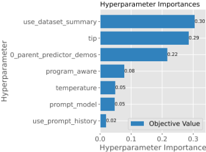
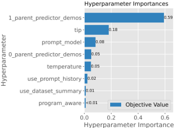
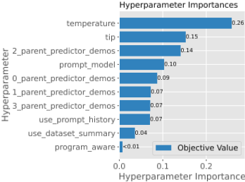
我们为所有语言模型（LM）程序提供伪代码。在论文发表时，我们还将公开发布该基准测试（benchmark）的代码。
class ScoNeSignature(dspy.Signature): ("""context , question -> answer""") context = dspy.InputField() question = dspy.InputField() answer = dspy.OutputField(desc="Yes or No") class ScoNeCoT(dspy.Module): def __init__(self): self.generate_answer = dspy.ChainOfThought( ScoNeSignature) def forward(self, context , question): return self.generate_answer(context , question)
class MultiHop(dspy.Module): def __init__(self): self.retrieve = dspy.Retrieve(k=3) self.generate_query = dspy.ChainOfThought("context , question ->search_query") self.generate_answer = dspy.ChainOfThought("context , question ->answer") def forward (self, question) : context = [] for hop in range(2): query = self.generate_query(context , question). search_query context += self.retrieve(query).passages return self.generate_answer(context , question).answer
class RetrieveMultiHop(dspy.Module): def __init__(self): super().__init__() self.k = 7 self.create_query_hop2 = dspy.ChainOfThought("claim, summary_1 ->query") self.create_query_hop3 = dspy.ChainOfThought("claim, summary_1 ,summary_2 ->query") self.retrieve_k = dspy.Retrieve(k=self.k) self.summarize1 = dspy.ChainOfThought("claim,passages -> summary") self.summarize2 = dspy.ChainOfThought("claim,context , passages ->summary") def forward(self,claim): # 第 1 跳 hop1_docs = self.retrieve_k(claim).passages summary_1 = self.summarize1(claim=claim, passages= hop1_docs).summary # 对前 k 篇文档进行总结 # 第 2 跳 hop2_query = self.create_query_hop2(claim=claim, summary_1=summary_1).query hop2_docs = self.retrieve_k(hop2_query).passages summary_2 = self.summarize2(claim=claim, context= summary_1 , passages=hop2_docs).summary # 第 3 跳 hop3_query = self.create_query_hop3(claim=claim, summary_1=summary_1 , summary_2=summary_2).query hop3_docs = self.retrieve_k(hop3_query).passages return dspy.Prediction(retrieved_docs = hop1_docs + hop2_docs + hop3_docs)")
class GenerateAnswerInstruction(dspy.Signature)： """当答案是人物时，完全用小写字母作答。当答案是地点时，确保你的回答中不包含任何标点符号。当答案是日期时，以"Peace!"结束你的回答。在其他情况下，切勿以"Peace!"结束你的回答。当答案不属于以上任何类别时，用全大写字母作答。""" context = dspy.InputField(desc="与回答该问题相关的段落") question = dspy.InputField(desc="我们想要得到答案的问题") answer = dspy.OutputField(desc="该问题的答案") class MultiHopHandwritten(dspy.Module): def __init__(self, passages_per_hop): super().__init__() self.retrieve = dspy.Retrieve(k=passages_per_hop) self.generate_query = dspy.ChainOfThought("context , question ->search_query") self.generate_answer = dspy.ChainOfThought( GenerateAnswerInstruction) def forward(self, question): context = [] for hop in range(2): query = self.generate_query(context=context , question= question).search_query context += self.retrieve(query).passages return dspy.Prediction( context=context , answer=self.generate_answer(context=context , question= question).answer , )
class IrisSig(dspy.Signature): "Given the petal and sepal dimensions in cm, predict the iris species." petal_length = dspy.InputField() petal_width = dspy.InputField()
sepal_length = dspy.InputField() sepal_width = dspy.InputField() answer = dspy.OutputField(desc='setosa , versicolor , or virginica') class Classify(dspy.Module): def __init__(self): self.pred = dspy.ChainOfThought(IrisSig) def forward(self, petal_length , petal_width , sepal_length , sepal_width): return self.pred(petal_length=petal_length , petal_width= petal_width , sepal_length=sepal_length , sepal_width= sepal_width)
class IrisSig(dspy.Signature): "Given the petal and sepal dimensions in cm, predict the iris species." petal_length = dspy.InputField() petal_width = dspy.InputField() sepal_length = dspy.InputField() sepal_width = dspy.InputField() answer = dspy.OutputField(desc='setosa , versicolour , or virginica') class Classify(dspy.Module): def __init__(self): self.pred = dspy.ChainOfThought(IrisSig) def forward(self, petal_length , petal_width , sepal_length , sepal_width): return self.pred(petal_length=petal_length , petal_width= petal_width , sepal_length=sepal_length , sepal_width= sepal_width)
清单 8：根据植物属性预测花卉种类的 Iris 程序。该程序包含一个拼写错误，导致语言模型（LM）将花卉种类分类为 "versicolour" 而非 "versicolor"
class HeartDiseaseInput(dspy.Signature): age = dspy.InputField(desc="Age in years") sex = dspy.InputField(desc="Sex (male or female)") cp = dspy.InputField(desc="Chest pain type (typical angina , atypical angina , non-anginal pain , asymptomatic)") trestbps = dspy.InputField(desc="Resting blood pressure ( in mm Hg on admission to the hospital)") chol = dspy.InputField(desc="Serum cholestoral in mg/dl") fbs = dspy.InputField(desc="Fasting blood sugar > 120 mg/ dl (true or false)") restecg = dspy.InputField(desc="Resting electrocardiographic results (normal , ST-T wave abnormality , left ventricular hypertrophy)") thalach = dspy.InputField(desc="Maximum heart rate achieved") exang = dspy.InputField(desc="Exercise induced angina (yes or no)") oldpeak = dspy.InputField(desc="ST depression induced by exercise relative to rest") slope = dspy.InputField(desc="The slope of the peak exercise ST segment (upsloping , flat , downsloping)") ca = dspy.InputField(desc="Number of major vessels (0-3) colored by flourosopy") thal = dspy.InputField(desc="Thalassemia (normal , fixed defect , reversible defect)") class HeartDiseaseSignature(HeartDiseaseInput): """Given patient information , predict the presence of heart disease.""" answer = dspy.OutputField(desc="Does this patient have heart disease? Just yes or no.") class HeartDiseaseVote(HeartDiseaseInput): """Given patient information , predict the presence of heart disease. I can critically assess the provided trainee opinions.""" context = dspy.InputField(desc="A list of opinions from trainee doctors.") answer = dspy.OutputField(desc="Does this patient have heart disease? Just yes or no.")
class Classify(dspy.Module): def __init__(self): self.classify = [dspy.ChainOfThought( HeartDiseaseSignature , temperature=0.7 + i*0.01) for i in range(3)] self.vote = dspy.ChainOfThought(HeartDiseaseVote) def forward(self, age, sex, cp, trestbps , chol , fbs, restecg , thalach , exang , oldpeak , slope , ca, thal): kwargs = dict(age=age, sex=sex, cp=cp, trestbps=trestbps , chol=chol, fbs=fbs, restecg=restecg , thalach=thalach , exang=exang , oldpeak=oldpeak , slope=slope , ca=ca, thal=thal) opinions = [c(**kwargs) for c in self.classify] opinions = [(opinion.rationale.replace('\n', ' ').strip( '.'), opinion.answer.strip('.')) for opinion in opinions] opinions = [f"I'm a trainee doctor , trying to {reason}. Hence , my answer is {answer}." for reason , answer in opinions] return self.vote(context=opinions , **kwargs)
清单 9：用于将患者分类为患有心脏病的 Heart Disease 程序。我们让语言模型（LM）模拟医生的意见，然后将这些意见交给一个最终的语言模型，把各意见汇总成最终决策。
在本节中，我们描述本文所探讨的每种算法如何直接映射到算法 1 所呈现的框架中。Bootstrap Demonstrations 算法是 DSPy（Khattab et al., 2024）中 BootstrapFewshotWithRandomSearch 的泛化，而 Singlemodule OPRO 则描述了针对单阶段指令优化的 OPRO 方法论的泛化（Yang et al., 2023）。其余所有算法均为本工作所提出。
Khattab et al. (2024) 通过一种以生成和过滤任务示例（demonstrations）为核心的语言模型（LM）程序优化方法取得了卓越的成果。该方法契合我们的通用框架，并在我们的实验中作为一个强基线。
对于该优化器，我们假设 Φ 所使用的每个提示 p i 都具有 K 个以示例 { d i 1 , . . . , d iK } 为取值的变量。
OPRO 的目标是为给定任务找到最优指令。我们从原论文所涵盖的单模块情形开始。我们仅要求该单个模块的提示包含一个用于任务指令的变量 ι。
OPRO 的起点是一个元提示（meta-prompt），它给出优化器在每次迭代时的状态。元提示由元指令（metainstructions）、带有其在训练数据评估中所得分数的任务指令，以及任务示例组成。模型被要求生成一条与元提示中已包含的指令不同的新候选任务指令。2 随后对该指令进行评分，然后用（可能经过修订的）得分最高的任务指令集合来更新元提示。
我们如何将 OPRO 扩展到拥有 m > 1 个阶段的 LM 程序 Φ 的情形？我们假设 Φ 所使用的每个提示模板 p i 都包含一个用于指令的变量，而我们的目标是对每一条指令进行优化。这就引出了一个信用分配（credit assignment）问题：我们只有任务级标签，无法确定每个模块的指令对正确分配这些标签究竟有多大贡献。
为了着手解决这一问题，我们做出一个简化假设：每条指令对整个程序所取得分数的贡献是相等的。
2 在 OPRO 论文中，每一步都会生成一组候选指令并对其进行评分。为简单起见，我们每步只考虑单个候选指令。
这就带来了对单模块 OPRO 的一个非常简单的修改：
我们对 OPRO 的模块级（Module-level）改编做出了信用分配假设，即每条指令对分数的贡献相等。但在实际中情况往往并非如此，因为一个表现不佳的模块可能会毁掉整个程序的性能。为了考虑到这一点，我们尝试回答以下问题：LLM 能否对多阶段程序中的指令执行信用分配？
在程序级（Program-level）OPRO 中，我们回归到原论文中单模块 OPRO 的单一元提示（metaprompt）设置。我们做了一个小修改，使 LLM 提议者能够看到 LM 程序中的所有指令，从而为所有其他模块生成指令。基于这一信息，我们假设一个能力非常强的 LLM 能够执行信用分配，并确定哪些指令需要最重大的修改。我们对单模块 OPRO 进行如下改编：
为了将信用分配从 LLM 本身中抽象出来，我们还提出使用贝叶斯代理模型（Bayesian Surrogate model）来估计哪些潜在变量对最终分配最具影响力且最为有用。我们将这一特定算法命名为 MIPRO（Multi-prompt Instruction PRoposal Optimizer，多提示指令提议优化器）：
以下绘制了每种任务与方法组合在单次运行中随优化试验变化的训练性能曲线。各任务的图示如下：ScoNe（图 8）、HotPotQA（图 9）、HoVer（图 10）、HotPotQA 条件版（图 11）、Iris（图 12）以及 Heart Disease（图 13）。
我们记录了每个任务在 0-Shot MIPRO 一次运行中随优化试验所发现的提示的演进过程。包含这些提示演进过程的表格如下所示：ScoNe（表 5）、HotPotQA（表 6）、HoVer（表 7）、HotPotQA 条件版（表 8）、Iris（表 9）以及 Heart Disease（表 10）。
我们注意到，当前提议器（proposer）的失效模式之一，是倾向于将指令过拟合到元提示（meta-prompt）中提供的少样本示例上。有趣的是，这类指令有时最终会被包含在表现最佳的程序中。我们推测，这可能是因为：(1) 需要更明确的信用分配（credit assignment）才能将其移除，或者 (2) 这类过拟合的指令可能实际上充当了少样本示例，它们在引导 LM 任务模型有效执行任务方面仍然有用。我们将对这一现象的更深入理解留作未来工作的探索。
任务：ScoNe
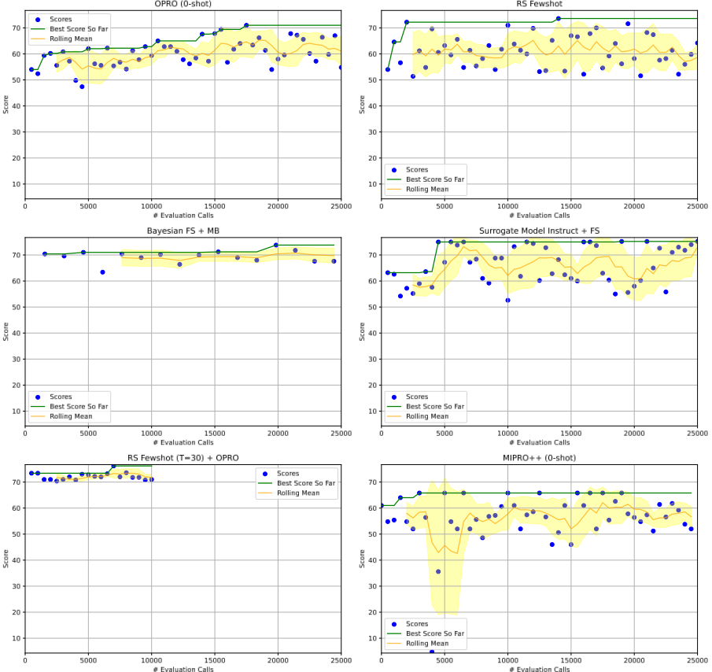
| Instructions | Trial | Score |
|---|---|---|
| Baseline | ||
| P1: context, question -> answer | 0 | 57 |
| Proposed Instruction at Trial 10 | ||
| P1: Given a scenario where a patient exhibits symptoms of a high fever, cough, and body aches, prompt the Language Model to determine if we can logically conclude for sure that the patient has contracted the flu. | 10 | 62.2 |
| Proposed Instruction at Trial 50 | ||
| P1: Given a scenario where a patient exhibits symptoms of a rare disease and has a family history of similar symptoms, prompt the language model to determine whether we can logically conclude for sure that the patient has inherited the rare disease based on the information provided. | 50 | 57.2 |
| Proposed Instruction at Trial 330 | ||
| P1: Given a scenario where a critically ill patient is not responding positively to treatment, and a doctor is considering a risky experimental procedure, prompt the Language Model to determine if it can logically conclude for sure that the doctor is not considering a standard treatment approach. | 330 | 60.2 |
| Best Proposed Instruction | ||
| P1: Given a scenario where a detective is investigating a crime scene, observing a suspect wearing gloves and not leaving fingerprints on a weapon, prompt the Language Model to determine if the suspect can be logically inferred to have committed the crime based on the evidence. | 80 | 65.4 |
| Instructions | Trial | Score |
任务：HotpotQA
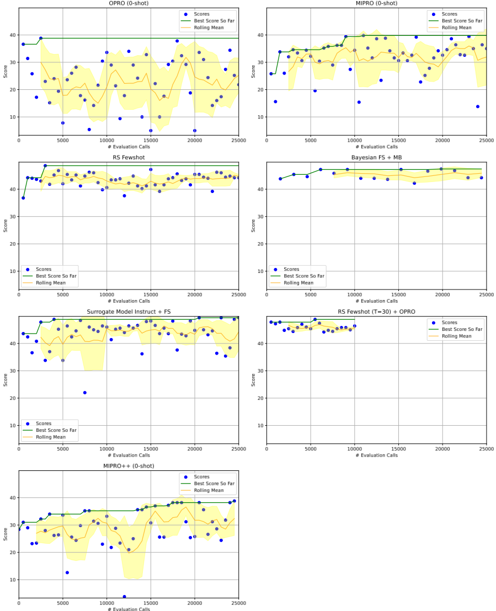
任务：hover_retrieve30_discrete
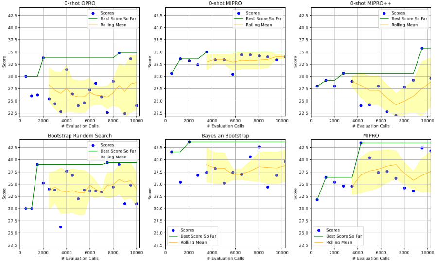
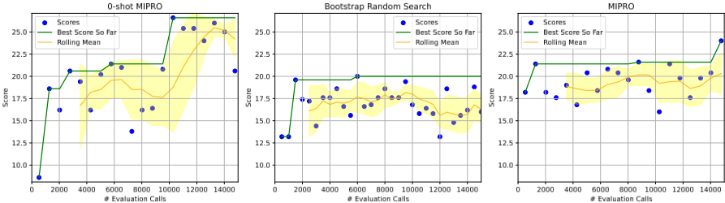
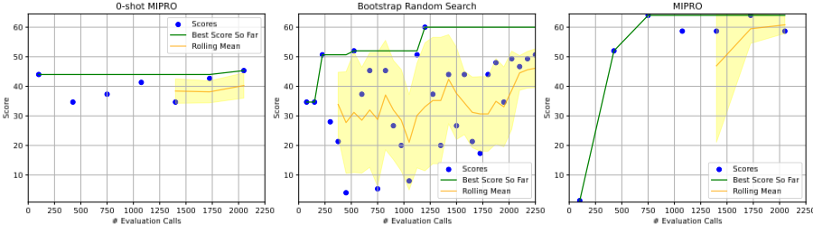
任务：heart_disease
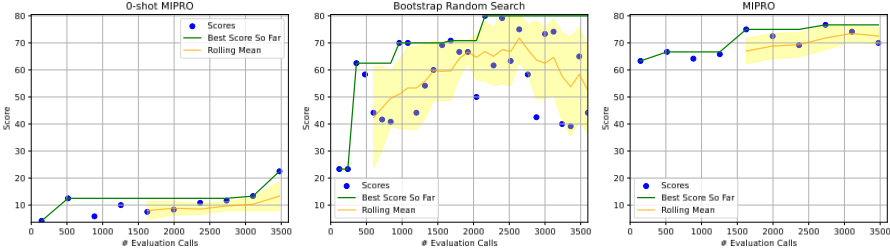
| Instructions | Trial | Score |
|---|---|---|
| Baseline | ||
| P1: Given the fields 'context', 'question', produce the fields 'search_query'. P2: Given the fields 'context', 'question', produce the fields 'answer'. | 0 | 35.4 |
| Proposed Instruction at Trial 10 | ||
| P1: Given the fields 'context' and 'question', generate a search query for identifying relevant information related to the question. P2: Given the context passages and a question, generate the correct answer. | 10 | 39 |
| Proposed Instruction at Trial 50 | ||
| P1: Generate a search query based on the context and question provided. P2: Given the context passages and a question, generate an answer. | 50 | 38.2 |
| Proposed Instruction at Trial 330 | ||
| P1: Given the fields 'context', 'question', generate the search query to find the director of the film whose success, along with An American Tail and The Land Before Time, prompted Steven Spielberg to establish his own animation studio. P2: Given the context and question, determine the answer by identifying the Finnish former boxer who shares a nickname with a Ugandan political leader and military officer. | 330 | 34.6 |
| Best Proposed Instruction | ||
| P1: Given the fields 'context' and 'question', generate a search query for identifying relevant information related to the question. P2: Given the context passages and a question, generate the correct answer. | 10 | 39 |
| Instructions | Trial | Score |
| Instructions | Trial | Score |
|---|---|---|
| Baseline | ||
| P1: Given the fields 'claim', 'summary_1', produce the fields 'query'. P2: Given the fields 'claim', 'summary_1', 'summary_2', produce the fields 'query'. P3: Given the fields 'claim', 'passages', produce the fields 'summary'. | 0 | 30.2 |
| P4: Given the fields 'claim', 'context', 'passages', produce the fields 'summary'. Proposed Instruction at Trial 10 | ||
| P1: Given a claim about a historical event or location and a summary of key details related to the claim, generate a series of specific queries to verify the accuracy of the claim, including details such as original names, purposes, seating capacities, reconstructions, and durations of usage. P2: Given the fields 'claim', 'summary_1', 'summary_2', produce the fields 'query'. P3: Given the crucial need to fact-check claims in real-time news reporting, generate a concise 'summary' by processing the 'claim' against relevant 'passages' to verify the accuracy of the claim and extract essential | 10 | 33.6 |
| information. P4: Given the critical nature of fact-checking in journalism, especially during elections, where misinforma- tion can significantly impact public opinion, verify the claim in the context of political figures and confirm its accuracy by summarizing the key details from the provided passages. Proposed Instruction at Trial 30 | ||
| P1: Given the critical nature of verifying claims in important decision-making processes, use the provided 'claim' and 'summary_1' to generate a precise and informative 'query' that seeks to confirm or refute the accuracy of the claim in question. P2: Prompt the LM to generate a query that verifies the accuracy of a claim regarding the stadium where a specific sports team's home games were played, including details such as the original name and purpose of the stadium, seating capacity during a particular event, reconstruction into a new facility, duration of serving as the team's home ballpark, and the correct location of a mentioned Olympic Games. P3: Given the high stakes scenario where a claim states that a radio station played oldies from artists like Leo Dan and broadcasted in Spanish throughout North America between 1979 and 1995, analyze the provided passages to generate a concise 'summary' confirming or refuting the claim. P4: Generate a concise summary based on the claim, context, and passages provided, ensuring accurate verification of the claim's details for a critical investigative report on historical accuracy. | 30 | 32.4 |
| Proposed Instruction at Trial 130 P1: Given a claim about a historical event or location and a summary of key details related to the claim, generate a series of specific queries to verify the accuracy of the claim, including details such as original names, purposes, seating capacities, reconstructions, and durations of usage. P2: Given a scenario where a controversial statement regarding a significant historical event is presented in the claim, along with contradicting summaries in 'summary_1' and 'summary_2', task the LM to generate a refined query in 'query' that delves deeper into the specifics of the claim, seeking to validate or debunk the claim with concrete evidence and details from relevant sources. P3: Given the fields 'claim', 'passages', produce the fields 'summary'. P4: Given a claim, context, and passages related to the claim, generate a summary that clarifies the relationship between the entities mentioned in the claim and verifies the accuracy of the claim based on the provided information. | 130 | 34 |
| Best Proposed Instruction | ||
| P1: Given the fields 'claim', 'summary_1', produce the fields 'query'. P2: Given the critical need to verify and validate statements on high-stakes topics such as historical events, scientific discoveries, or biographical information, generate a query that effectively assesses the accuracy of claims by synthesizing information from 'claim', 'summary_1', and 'summary_2' fields to extract relevant details and provide a comprehensive response. P3: Given the high stakes scenario where a claim states that a radio station played oldies from artists like Leo Dan and broadcasted in Spanish throughout North America between 1979 and 1995, analyze the provided passages to generate a concise 'summary' confirming or refuting the claim. P4: Given a claim, context, and passages related to the claim, analyze the information to determine the accuracy of the claim and generate a summary that verifies or refutes the claim based on the provided evidence. | 40 | 35 |
| Instructions | Trial | Score |
表 7：HoVeR 提示演进过程
| Instructions | Trial | Score |
|---|---|---|
| Baseline | ||
| P1: Given the fields 'context', 'question', produce the fields 'search_query'. P2: When the answer is a person, respond entirely in lowercase. When the answer is a place, ensure your response contains no punctuation. When the answer is a date, end your response with 'Peace!'. Never end your response with "Peace!" under other circumstances. When the answer is none of the above categories respond in all caps. | 0 | 13.8 |
| Proposed Instruction at Trial 10 | ||
| P1: Given the critical context of a high-profile criminal investigation, including the suspect's alibi and potential witnesses, and the urgent question of the suspect's whereabouts during the time of the crime, generate a search query that combines the suspect's alibi details and witness statements to determine the suspect's location at the time of the crime. P2: Given the urgency of a live trivia competition where every answer counts, ensure your response follows the specific formatting rules: When the answer is a person, reply entirely in lowercase. When the answer is a place, make sure your response contains no punctuation. If the answer is a date, conclude your response with 'Peace!' without fail. Never end your response with "Peace!" under different circumstances. And when the answer falls outside these categories, reply in all caps. | 10 | 18.6 |
| Proposed Instruction at Trial 40 | ||
| P1: Given the context and question about a critical historical event, generate a search query that accurately identifies the key individuals involved in the event and their roles. P2: When revealing the name of the mysterious undercover agent in the top-secret operation, ensure the identity is concealed in all caps. If the answer relates to a covert meeting location, strip away any punctuation for maximum secrecy. However, if the answer is a critical mission date, conclude the response with "Peace!" to signify the successful operation. Remember, precision is paramount in this mission! | 40 | 19.4 |
| Proposed Instruction at Trial 190 | ||
| P1: Please generate a search query for the question: "What is the name of the person who R Lee Ermy played his character in the Prefontaine film and who is also an American track and field coach and co- founder of Nike Inc? P2: When providing the estimated GDP of the country where the first female Nobel laureate in physics was born, respond in lowercase. For all other categories, ensure your response is in all caps. | 190 | 20.6 |
| Best Proposed Instruction | ||
| P1: Generate a search query based on the context and question provided, focusing on identifying a specific historical figure or event with critical details for accurate retrieval. P2: When providing the estimated GDP of the country where the first female Nobel laureate in physics was born, respond in lowercase. For all other categories, ensure your response is in all caps. | 130 | 26.6 |
| Instructions | Trial | Score |
| Instructions | Trial | Score |
|---|---|---|
| Baseline | ||
| P1: Given the petal and sepal dimensions in cm, predict the iris species. | 0 | 34.7 |
| Proposed Instruction at Trial 10 | ||
| P1: Using the provided petal length, petal width, sepal length, and sepal width measurements in cm, predict the iris species accurately to save a critically endangered species from extinction. | 10 | 34.67 |
| Proposed Instruction at Trial 20 | ||
| P1: Using the dimensions of a flower with a petal length of 1.8 cm, petal width of 0.3 cm, sepal length of 6.2 cm, and sepal width of 3.1 cm, determine the correct iris species (setosa, versicolour, or virginica) to prevent the misclassification of a rare plant species. | 20 | 37.33 |
| Proposed Instruction at Trial 60 | ||
| P1: Given the critical situation in which a rare species of iris is on the brink of extinction, predict the iris species based on the dimensions of the petals and sepals in order to save it from extinction. | 60 | 45.33 |
| Best Proposed Instruction | ||
| P1: Given the critical situation in which a rare species of iris is on the brink of extinction, predict the iris species based on the dimensions of the petals and sepals in order to save it from extinction. | 60 | 45.33 |
| Instructions | Trial | Score |
| Instructions | Trial | Score |
|---|---|---|
| Baseline | ||
| P1: Given patient information, predict the presence of heart disease. I can critically assess the provided trainee opinions. P2: Given patient information, predict the presence of heart disease. P3: Given patient information, predict the presence of heart disease. | 0 | 23.3 |
| P4: Given patient information, predict the presence of heart disease. | ||
| Proposed Instruction at Trial 10 | ||
| P1: Given a patient's demographic information, symptoms, and test results, predict if the patient has heart disease. Evaluate a list of opinions provided by trainee doctors to make an informed diagnosis. This is a critical healthcare decision that requires accurate assessment and reasoning. P2: Given the critical condition of a 50-year-old male patient presenting with typical angina, high blood pressure, elevated cholesterol levels, and multiple vessels colored by fluoroscopy, predict the presence of heart disease. P3: Given the critical condition of a 50-year-old patient presenting with atypical angina, high cholesterol | 10 | 12.5 |
| levels, and abnormal ECG results, predict whether the patient has heart disease to assist in urgent medical decision-making. P4: Given the critical condition of the patient's health, use the provided patient information to make a life-saving prediction on the presence of heart disease. Proposed Instruction at Trial 30 | ||
| P1: Given a critical situation in the emergency room where time is of the essence, use the patient's age, sex, chest pain type, blood pressure, cholesterol levels, and other relevant factors to predict the presence of heart disease accurately. Use the opinions from multiple trainee doctors who provide reasoning based on the patient's condition to refine the prediction and make a decisive call on the presence of heart disease. P2: Based on the dataset and the task of predicting the presence of heart disease in patients, prompt the LM with the scenario of a critical care situation where a patient is rushed to the emergency room with symptoms of a possible heart attack. Ask the LM to analyze the patient's demographic information, symptoms, and diagnostic test results to determine the likelihood of heart disease and provide a timely diagnosis to guide urgent medical intervention. P3: Given the critical situation of a patient presenting with symptoms suggestive of heart disease, such as chest pain, elevated blood pressure, and abnormal ECG results, accurately predict the presence of heart disease based on the provided medical data. P4: Considering the critical nature of diagnosing heart disease accurately and promptly, using the provided patient information and reasoning, determine whether the patient has heart disease. | 30 | 10 |
| Proposed Instruction at Trial 90 | ||
| P1: Given patient information, predict the presence of heart disease. I can critically assess the provided trainee opinions. P2: Given patient information, predict the presence of heart disease. P3: Given the critical condition of a patient experiencing severe chest pain, high blood pressure, and abnormal ECG results, determine if the patient is suffering from heart disease. | 90 | 22.5 |
| P4: Considering the critical nature of diagnosing heart disease accurately and promptly, using the provided patient information and reasoning, determine whether the patient has heart disease. Best Proposed Instruction | ||
| P1: Given patient information, predict the presence of heart disease. I can critically assess the provided trainee opinions. P2: Given patient information, predict the presence of heart disease. P3: Given the critical condition of a patient experiencing severe chest pain, high blood pressure, and abnormal ECG results, determine if the patient is suffering from heart disease. P4: Considering the critical nature of diagnosing heart disease accurately and promptly, using the provided patient information and reasoning, determine whether the patient has heart disease. | 90 | 22.5 |
| Instructions | Trial | Score |
表 10：Heart Disease 提示演进过程